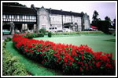

Thank you for taking time
to visit my site!
Hello,
my name is Sunil Jayasinghe (right), with 20 years
experience as a personal tour guide; I know this island
like the back
of my hand!
I have set up in business by myself because
I want to offer much more than the average travel or tour
company.
I
speak English and the local language, Sinhalese,
but if you need someone who speaks German, French or
Japanese this can be catered for.
Where to go. What to see. Where
to find the best of everything.
I can take care of it all while you relax and enjoy
my beautiful country. My years of experience ensure that
you have a stress-free and unforgettable trip.
Honest. Dependable.
Trustworthy. Quality.
I believe punctuality speaks a lot about oneself. Beginning
with answering your emails promptly to taking care of all
the details before you arrive. Once you get to
Sri Lanka you can look
forward to a unrivaled personal service - as
my previous customers can tell you...
Business
interest, foreign investor or an expat Sri Lankan?
If you require someone to do the legwork involved getting
paperwork through Sri Lankan bureaucracy; I can take care
of it. For those who don't know,
the wheels of administration turn slowly - more slowly
for some than others!
In addition to providing you with general
information on doing business in
Sril Lanka, I can offer
you a specific
service in setting up a Sri Lankan Board of Investment
(BOI) approved company.
For the many expat
Sri Lankans around
the world I can help with
applications for passport renewals and filings
for dual nationality.
Remember: I want this to be a
memorable holiday for you.
I would love to have you as a repeat customer
who is happy to recommend me to your friends. I will work
hard to earn your trust and respect. Let me do my best
and then you decide.
I look forward to hearing from you!
Email is the quickest way, but
please
phone or fax if
you prefer.
Contact me as early as possible so that
we can fine-tune the details of your trip to your satisfaction.
Best regards,

Sri Lanka. My Country. A Beautiful
Land. Let Me Show it to You.
|